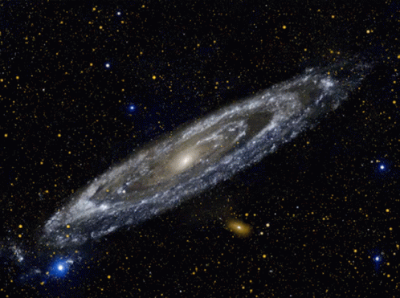

Understanding Astronomy
Astronomy is the study of celestial objects, space, and the universe as a whole. It explores everything from planets and stars to galaxies and the cosmos.
Learn More
It is one of the oldest sciences, and understanding it helps us comprehend our place in the universe. From ancient civilizations to modern astrophysics, astronomy has always fascinated humanity.
Common topics include the solar system, black holes, and the Big Bang theory. Each topic has its unique wonders and complexities.
Infographic

This infographic illustrates key facts and statistics about astronomy, including the vast distances between stars and the age of the universe.
It highlights the importance of telescopes and technology in our understanding of space.
Fun Facts about Astronomy
The Solar System
Fact: The solar system is about 4.6 billion years old and consists of eight planets, including Earth.
Learn More: The planets are divided into terrestrial and gas giants, each with unique features.
Stars and Their Life Cycle

Fact: Stars are born in nebulae, vast clouds of gas and dust in space.
Learn More: After millions of years, a star goes through various stages, ending with either a supernova or a white dwarf.
Black Holes
Fact: Black holes are regions in space where gravity is so strong that nothing can escape.
Learn More: They form from the collapse of massive stars after they exhaust their nuclear fuel.
The Milky Way Galaxy
Fact: Our galaxy contains over 100 billion stars and measures about 100,000 light-years in diameter.
Learn More: The Milky Way is home to various solar systems and cosmic phenomena.
The Expanding Universe

Fact: The universe is continuously expanding, with galaxies moving away from us.
Learn More: This expansion was discovered by Edwin Hubble in the 1920s, indicating a Big Bang origin.
Watch & Learn
learn more about astronomy through this informative video:
Credits to the rightful owner.